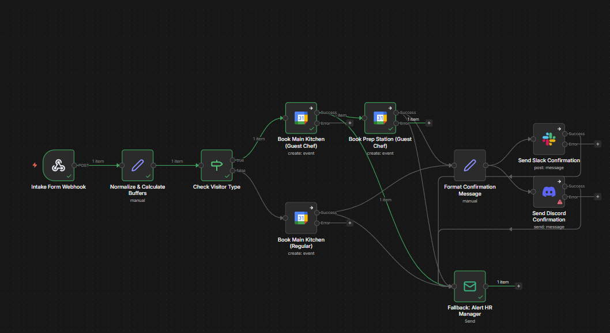
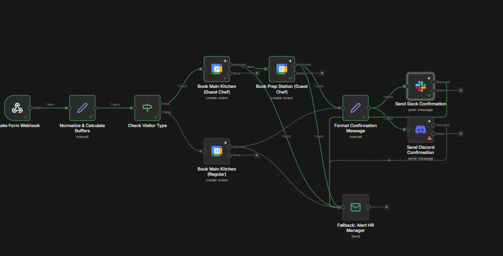

Kitchen Booking Workflow
Process Walkthrough — n8n Automation
Milestone 1 Deliverable · Version 1.0 · 2026-04-14
This guide walks a non-technical reader through exactly what happens when someone books the kitchen. It can be narrated over screenshots for a training video or reviewed as a PDF handout.
Audience: Operations staff, HR, and anyone onboarding to the kitchen booking process. No coding knowledge required.
Scene 1 — A Guest Chef Submits a Booking
Chef Amara is visiting next Tuesday to cook a tasting menu. She fills in the booking form on the intranet.
Form data submitted:
- Name: Amara Okafor
- Visitor type: Guest Chef
- Start time: Tue 21 Apr 2026, 18:00
- End time: Tue 21 Apr 2026, 21:00
- Purpose: Spring tasting menu
When she clicks Submit, the form sends the details to our n8n workflow over the internet.
[Screenshot: Intranet booking form with Guest Chef option selected]
Scene 2 — The Workflow Wakes Up
The workflow is always listening on a web address (the Webhook). The moment Amara's form arrives, the first node lights up green.
Full canvas — Webhook receiving the booking and dispatching through the graph.

The workflow now has Amara's request in memory and is ready to decide what to do with it.
Scene 3 — The Conditional Logic Fires
A decision node called Check Visitor Type inspects the visitorType field.
- If it says
Guest Chef, the request follows the top path.
- If it says
Regular, it follows the bottom path.
Because Amara is a Guest Chef, the workflow takes the top path.
Why this matters: Guest Chefs need extra equipment and prep space. Regulars do not. Sending them down different paths keeps the calendars tidy.
Scene 4 — Calculating the Buffer Times
Because Amara is a Guest Chef, the Normalize & Calculate Buffers node adjusts her times:
- Prep buffer: 60 minutes are subtracted from her start time. The calendar booking begins at 17:00 (not 18:00) so she can set up.
- Cleanup buffer: 30 minutes are added to her end time. The booking ends at 21:30 so staff can clean.
| Field | Submitted | After Buffer |
|---|
| Start time | 18:00 | 17:00 |
| End time | 21:00 | 21:30 |
Note: Regulars skip this logic. Their submitted times are used as-is.
Scene 5 — Booking Two Calendars
A Guest Chef needs both the Main Kitchen and the Prep Station. The workflow runs two calendar nodes in sequence on the Guest Chef branch:
- Main Kitchen calendar — creates an event titled "Guest Chef: Amara Okafor — Spring tasting menu" from 17:00 to 21:30.
- Prep Station calendar — creates the same event on the prep-station calendar.
Slack + Discord notification stage (canvas view).

For Regulars: Only the Main Kitchen calendar is booked. The Prep Station step is skipped.
Scene 6 — Announcing to Slack and Discord
After the calendar events are created, the Format Confirmation Message node builds a human-readable summary. Two messages are then sent in parallel to the #kitchen-updates channel:
- Slack: a formatted card with Amara's name, times, and purpose.
- Discord: the same information, posted via webhook.
New Guest Chef booking confirmed
Chef: Amara Okafor
When: Tue 21 Apr 2026, 17:00 – 21:30 (includes 60 min prep + 30 min cleanup)
Purpose: Spring tasting menu
Calendars: Main Kitchen, Prep Station
The team now knows the kitchen is claimed.
Scene 7 — Regular Visitor, the Shorter Path
For comparison, here is what happens for a Regular visitor (e.g., staff booking the kitchen for a Friday lunch-and-learn):
- Webhook receives the form.
- Check Visitor Type returns
false → follow the bottom path.
- No buffer is applied; submitted times are kept exactly.
- Only the Main Kitchen calendar is booked.
- Slack and Discord receive a shorter confirmation message.
Scene 8 — The Error Path: When Something Breaks
Imagine the Google Calendar API is down, or a credential expired overnight.
- The Main Kitchen calendar node tries to create the event.
- The API returns an error (
401 Unauthorized or 503 Service Unavailable).
- Instead of stopping silently, the node's error output routes to the Fallback: Alert HR Manager email node.
- The Email node immediately sends an urgent message to the HR Manager.
Subject: URGENT: Kitchen Booking Failure
A kitchen booking failed to complete.
• Visitor: Amara Okafor (Guest Chef)
• Requested: Tue 21 Apr 2026, 18:00 – 21:00
• Failing step: Book Main Kitchen (Guest Chef)
• Error: 401 Unauthorized — credential expired
Please follow up with the visitor and investigate the integration.
Important: This email is sent in addition to any logging. HR is the human fallback so that no booking silently disappears. Verified in test: SMTP returned 250 2.0.0 OK, accepted by the HR recipient.
Recap — What You Just Saw
- A form submission arrives.
- The workflow decides: Guest Chef or Regular?
- Guest Chefs get extra buffer time automatically.
- The right calendars are booked (one or two).
- Slack and Discord are notified.
- If anything breaks, HR gets an urgent email.
Total time from form submission to team notification: under 5 seconds.
Where to Go Next
- To understand why each decision exists, read
LOGIC_FLOW.md.
- To set up or test the workflow yourself, read
README.md.
- To see test data used for validation, open
sample-data/test-bookings.csv.